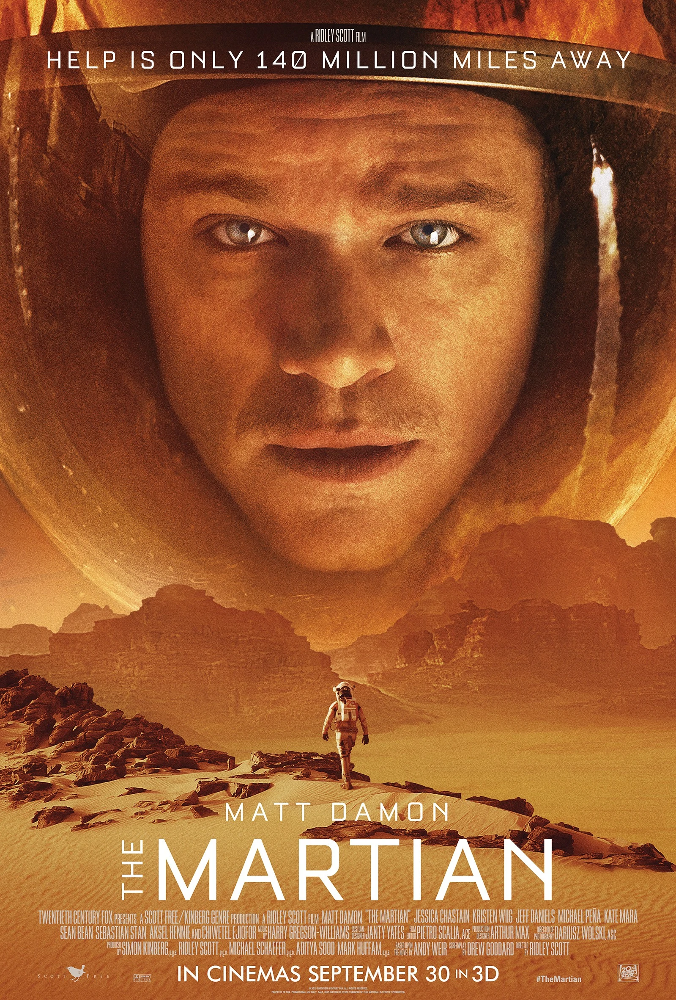
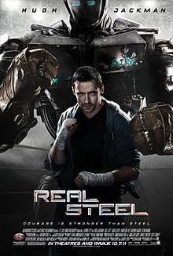

|
 |  | |
|
Journalist Eddie Brock is trying to take down Carlton Drake, the notorious and brilliant founder of the Life Foundation. While investigating one of Drake's experiments, Eddie's body merges with the alien Venom -- leaving him with superhuman strength and power. Twisted, dark and fueled by rage, Venom tries to control the new and dangerous abilities that Eddie finds so intoxicating. |
| When astronauts blast off from the planet Mars, they leave behind Mark Watney (Matt Damon), presumed dead after a fierce storm. With only a meager amount of supplies, the stranded visitor must utilize his wits and spirit to find a way to survive on the hostile planet. Meanwhile, back on Earth, members of NASA and a team of international scientists work tirelessly to bring him home, while his crew mates hatch their own plan for a daring rescue mission. |
| Charlie Kenton (Hugh Jackman) used to be a prizefighter but lost his chance to win a title when heavy, towering robots took over the boxing ring. Now working as a small-time promoter, Charlie pieces together scrap metal into low-end fighters, barely earning enough to make it from one underground venue to the next. After hitting rock bottom, Charlie reluctantly teams with his estranged son, Max (Dakota Goyo), to build and train a championship robot for a last shot at redemption. |
|
Southpaw is a 2015 American sports drama film directed by Antoine Fuqua, written by Kurt Sutter and starring Jake Gyllenhaal, Forest Whitaker and Rachel McAdams. The film follows a boxer who sets out to get his life back on track after losing his wife in an accident and later his young daughter to child protective services. The film was released on July 24, 2015, by The Weinstein Company. The film received mixed reviews from critics, while Gyllenhaal and Oona Laurence's performances received positive reviews. Billy "The Great" Hope (Jake Gyllenhaal), the reigning junior middleweight boxing champion, has an impressive career, a loving wife and daughter, and a lavish lifestyle. However, when tragedy strikes, Billy hits rock bottom, losing his family, his house and his manager. He soon finds an unlikely savior in Tick Willis (Forest Whitaker), a former fighter who trains the city's toughest amateur boxers. With his future on the line, Hope fights to reclaim the trust of those he loves the most. |
|
Logan is a 2017 American superhero action drama film starring Hugh Jackman as the titular character. It is the tenth film in the X-Men film series and the third and final installment in the Wolverine trilogy following X-Men Origins: Wolverine (2009) and The Wolverine (2013). In the near future, a weary Logan (Hugh Jackman) cares for an ailing Professor X (Patrick Stewart) at a remote outpost on the Mexican border. His plan to hide from the outside world gets upended when he meets a young mutant (Dafne Keen) who is very much like him. Logan must now protect the girl and battle the dark forces that want to capture her. |